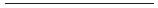

1. BÖLÜM

Otomobilimi, apartmanın yüksek duvarlarla korunmuş avlusunun içine, palabıyıkları yeniçerileri aratmayan kapıcının komutlarına uyarak soktum. Durmamı gösterdiği yere değil, ama inadına, daha ilerideki ulu atkestanesi ağacının gölgesinin altına park ettim.
El fenerini çektim, ama hemen inmedim aşağı.
Araç telefonundan birisini aradım. Bilmediğim bir şey için değil, bildiğim bir şeyi bir kere daha doğrulatmak için. Bıyıklı kapıcı, ne bekliyor bu herif çıkmak için der gibi benim tarafa bakıyordu.
Avlunun içi benim otomobilimi utandıracak kadar yeni, otoyolda geri bırakacak kadar hızlı, otel kapıcılarını heyecanlandıracak kadar pahalı başka otomobillerle doluydu.
Benimkinden daha temizdi hepsi.
Telefonu “Hoşça kal!” ya da “Görüşürüz!” veya “Kendine iyi bak!” demeden kapadım. Konuştuğum kişi kelimelere değil, davranışlara önem veren birisiydi. Ona doğru uzanan bir elin kendisine ne kadar uzandığına bakardı. Onu hayal kırıklığına uğratmamıştım dün gece yarısı. Nasıl olsa benim param değildi.
Sonra indim otomobilimden. Kapıları kilitlemedim.
“Asansörle son kat,” dedi yeniçeri bıyıklı kapıcı.
“Çok gelen var mı?” dedim adama.
“Babasının doğum günü daha kalabalıktı,” dedi bıyıklı kapıcı avlunun geniş kapısından görünen Boğaz’ın sularına bakarak.
Karşılık vermedim. Yukarıdan dik inen yamacı tutmakta zorlanıyor hissini veren istinat duvarının dibindeki asansöre doğru yürüdüm. Kapısı boydan boya camdı. Asansöre ilk kez bineceklere yukarıda göreceklerini müjdelemek istiyor gibi. İçinde yalnızca üç düğme vardı. En üsttekine bastım.
Hafif bir tıslamayla, hiç titremeden yükselmeye başladı kabin. Avlunun duvarlarını aşağıda bırakır bırakmaz ortaya çıkan Boğaz manzarası ilk kez gelenlerin soluğunu kesmeye adaydı. İstanbul’u yalnızca fotoğraflardan görmüş biri bile Rumelihisarı’nı tanırdı buradan. Ayakta durduğunuz bir helikopterin içinde gibi, durmadan yükseliyorduk. Yer uzaklaşıyor, caddeden geçen otobüsler heybetlerini kaybediyordu asansör çıktıkça. İçimden yükselen sigara içme isteğini bastırdım. Derin derin nefesler aldım manzaraya bakarak. Sigara dumanı yerine istinat duvarının arkasındaki ormanın gönderdikleriyle birleşen Boğaz’ın oksijenini gönderdim hara’ma.
Asansör durmak bilmedi epey bir süre. Evimin penceresinden görünen apartmanlarda yapsak bu dikine yolculuğu, yedinci kata çıkmıştık belki. Evin sahiplerinin, ayaklarının altında her saniye artan boşluktan yükseklik korkusuna kapılmadıkları açıktı. Eh artık, misafirliğe gelenlerin de, varsa, korkularını bastırmaları gerekiyordu birazcık. Kendimi yokladım, korkmuyordum. Ezan okumaya şerefeye çıkan müezzinler korkmuyorsa, ben de korkmazdım.
Sonunda durdu. Kabinden çıkmadan önce manzaraya son kez baktım. Keşke bu kadar güzel olmasaydı dedim içimden.
Asansörden inince normal apartmanlardaki giriş holünün en az dört misli büyük boşlukta bir an durdum. Bir kat yukarıya çıkan merdivenlerin yönünden müzik ve konuşma sesleri geliyordu. O tarafa doğru yürüdüm. Merdivenleri çıktıkça sesler çoğaldı.
Standart bir futbol sahasının ceza alanı büyüklüğünde bir salondu çıktığım yer.
Önce kimse beni fark etmedi.
Frank Sinatra şarkı söylüyordu düşük olmayan bir volümle arka planda. Yirmi yaşında bir kızın doğum günü partisinden bekleyeceğinizden daha büyük bir yaş ortalamasına sahip bir düzineden fazla insan, küçük gruplara ayrılmış, kendi aralarında konuşuyordu ritme uygun hafif hafif yerlerinde sallanarak. Kimse boydan boya kesintisiz camların arkasındaki İstanbul’a bakmıyordu.
Beni dört kişilik bir divanda tek başına oturan Aylin Arabacı gördü ilk.
Elindeki bardağı yere bıraktı, uzun eteğinin hepsi iliklenmemiş düğmelerinin denetleme şansı olmayan yırtmacından bacaklarının gözükmesine aldırmadan kalktı, bana doğru ilerledi.
“Remzi Ünal,” dedi. “Ne güzel sürpriz.”
Sürprize o kadar şaşırmış görünmüyordu.
“Bazı misafirler çağrılmadan gelir,” dedim.
“Özür dilerim,” dedi. “Doğum günü partisi benim fikrim değildi.”
“İyi düşünmüş kim düşünmüşse,” dedim.
“Babam,” dedi Aylin Arabacı. “Moralim düzelir diye.”
“Düzeldi mi?” dedim.
Yüzüme bakmadan vazgeçti.
“Bu insanları gördükçe daha çok hatırlıyorum Erol’u,” dedi, başparmağının tırnağını dişlerine götürerek. “Tanısaydınız siz de severdiniz.”
Erol Kaşıkçı’yı ilk gördüğümde içine dört kişinin bile sığabileceği kadar büyük yatağında gözlerini hiç kırpıştırmadan tavana bakıyordu. Şakağında bir delik, elinde bir tabanca vardı. Gördüklerimi Aylin Arabacı’ya anlatmamıştım.
Kız birden, bir açıdan bakıldığında ev sahibesi olduğunu hatırladı. Elini ağzından çekti.
“Bir şey içer misiniz?” dedi. “Bar şuracıkta.”
Başımı salladım. Asansörde içmeyi ertelediğim sigaramı yaktım içki yerine. Belki sonra bir kahve bulurdum kendime.
“Bir tane de bana verir misiniz?” dedi Aylin Arabacı.
Paketimi yeniden cebimden çıkarıp tuttum. İçinden aldığı sigarayı yaktım çakmağımla.
“İçtiğini bilmiyordum,” dedim.
“Ben de bilmiyordum,” dedi Aylin Arabacı ilk nefeste aldığı dumanı ağzından savururken. “Sizi görünce birden canım istedi.”
Sigarasından derin bir nefes çekmesine izin verdim.
“Konuşabileceğimiz bir yer var mı?” dedim sonra. “Şöyle kimsenin bizi rahatsız etmeyeceği bir yer.”
Dumanlar ağzından denetimsiz dağıldı birden. Ama öksürmedi. Yüzüme merakla baktı. Ben kendi sigarama sığındım. Bir an düşündü kız.
“Gözetleme Odası’na gidelim,” dedi sonra, başıyla odanın köşesini işaret ederek.
Başımı salladım.
Aylin Arabacı bir kül tablası arıyor gibi çevresine baktı. Kimse bize bakmıyordu ama. Sonra vazgeçti sigarasını söndürmekten.
“Gelin,” dedi başı öne eğik. Ceza sahası kadar büyük salonun öteki ucundaki kapıya yöneldi. Peşinden hareketlendim. Ellerinde kadehler, ayakta laflayan insanların arasından geçmemek için kenardan, barın önünden yürüdük. Kimseyle göz göze gelmemeye çalıştım. Bana bakan yoktu zaten.
Aylin Arabacı elini kapının tokmağına attı, daha açamadan arkadan gelen sesle durakladı.
“Doğum günü kızı nereye gidiyor öyle bizi bırakıp?”
Döndük.
Partinin en şık kadını ödülüne aday olmak ister gibi giyinmiş olan Aysu Arabacı, elindeki şampanya kadehini dudağına götürmüştü sorusunun cevabını beklemeden. Vücuduna yapışan siyah bir Marilyn Monroe kıyafeti vardı üstünde. Aylin Arabacı sigarasını saklamak ister gibi bir hareket yaptı, vazgeçti sonra. Ben derin bir nefes daha aldım kendi sigaramdan göstere göstere.
“Remzi Bey hediyesini kimseler görmeden mi vermek istiyor yoksa?” dedi Aysu Arabacı, içkisinden kocaman bir yudum aldıktan sonra. Bir bakıma doğruydu söylediği, sesimi çıkarmadım.
“Çok mu içtin sen abla?” dedi Aylin Arabacı. Sol eli hâlâ kapının tokmağındaydı.
“Fırsat bu fırsat,” dedi Aysu Arabacı. “Bundan sonra aylarca ailede doğum günü yok.” Sonra kendi kendine güldü. Sanki çok önemli şeyler biliyormuş da, söyleyemezmiş gibi güldü.
Aylin Arabacı yapacağı bir şey yokmuş bakışlarıyla baktı ablasına.
“Remzi Bey biraz konuşmak istemişti benimle,” dedi sonra, kapının tokmağındaki eline bakarak.
“Çok çok çok gizli değilse, ben de gelebilir miyim?” dedi Aysu Arabacı. “Bu partideki kadar sıkıcı insan arasan zor bulunur.”
Aylin Arabacı bana baktı. Omuzlarımı silktim. Benim için fark etmezdi.
Açtığı kapıdan içeri girdik. Kapıyı arkamızdan kapayınca Frank Sinatra’nın sesi duyulmaz oldu. Gözetleme Odası, Boğaz’ı, partinin sürdüğü kocaman salona göre başka bir açıdan gören, daha küçük bir odaydı. Görece küçük yani. Duvarın birini yerden tavana kadar yükselen bir kütüphane kaplıyordu. Tıklım tıklım kitaplarla doluydu. En az otuz yıl önce ciltlendiği belli kitaplarla dolu geniş bir rafın önündeki boşluğa antika bir kılıç konmuştu. Kınsız, pırıl pırıl bir kılıç... Odanın ortasında ayaklı, çok gelişmiş bir teleskop vardı. Kütüphanenin karşısındaki duvarı Boğaz’ın o noktadan panoramik çekilip büyütülmüş siyah beyaz bir fotoğrafı kaplıyordu. Teleskopun namlusu Dolmabahçe Sarayı’na çevrilmişti.
Sigaramın külünü karşılıklı duran iki koltuğun arasındaki sehpanın üzerindeki kül tablasına silkip, camın önüne yürüdüm. Yerdeki bir karışlık duvardan tavana kadar uzanan kesintisiz bir camın arkasındaydı dışarıdaki dünya. Metrelerce aşağıda küçük bir süs havuzu vardı.
Geri döndüm. Aysu Arabacı antika kılıcın alındığı yerden alınmışa benzer koltukların manzaraya bakanına oturmuştu bile. Kız kardeşi kapının hemen yanındaki duvara yaslanmış, ayakta duruyordu.
Aysu Arabacı şampanyasından bir yudum daha aldı. İkisi de bana bakıyorlardı şimdi.
Sanki çok önemli olmayan bir konuyu açıklar gibi konuştum.
“Erol o mektubu geri almışmış meğer,” dedim.
Kızların ikisinin de ağzından aynı anda küçük birer şaşkınlık nidası çıktı. Aylin Arabacı’nınki daha bir kontrollüydü sanki. Ablası arkamdaki manzaraya bakıyor gibiydi. Sonra, hadi sen sor der gibi kardeşine çevirdi bakışlarını.
“Sizde mi şimdi mektup?” dedi Aylin Arabacı, beklediğimden daha sakin bir sesle. Sigarasını yere atıp üstüne bastı. O kadar sakin değildi demek ki.
“Emin bir yerde,” dedim. Öyleydi gerçekten.
“Oku... okudunuz mu?” diye ekledi sonra.
“Hayır,” dedim. Bu yalandı. Büyük bir yalan.
Aysu Arabacı bu kez kocaman bir yudum aldı şampanyasından. Sonra nasıl olup da hızla bittiğini anlamak ister gibi evirip çevirdi elinde kadehi.
“Şimdi ne olacak?” dedi bana bakıp.
“Kardeşiniz bir karar verecek,” dedim. Artık iyice küçülmüş sigaramı sehpadaki kül tablasına bastırdım. Doğrulduğumda devam ettim. “Mektubu okumayı isteyip istemediğine karar verecek. Zor bir karar biliyorum ama...”
“Artık bir anlamı var mı emin değilim,” diye sözümü kesti Aysu Arabacı. “Aslında ölen öldü, kalan sağlar bizimdir durumu bir bakıma.” Sonra ekledi. “Pardon Aylin.”
Aylin Arabacı duvara yaslanmaya devam ediyordu. Belki de düşmemek için. Yüzünün renginde bir değişiklik görmedim ama.
“Boşuna mı öldü bu çocuk?” dedi sımsıkı kapalı gibi duran dudaklarının arasından. Sanki ablasına değil bana cevap veriyordu. “Ne zaman okuyabilirim?”
Bu sorunun bana sorulduğu açıktı.
Ama cevap veremedim.
Birden kapı açıldı. Üçümüz de içeri girene baktık.
Halim Kırbaç, sanki Gözetleme Odası’nda üçümüzü alt alta üst üste yakalayacağından eminmiş gibi bir gülümsemeyle girmişti odaya. Elinde bir viski kadehi vardı. Kravatını gevşetmiş, tombul yüzü hafif kızarmıştı. Başının tepesinde iyiden iyiye açılmış kısımda ufak ter damlaları parlıyordu. Fazla kilolarını saklamayı başaramayan siyah bir takım elbise giymişti.
“Ne oluyor burada?” dedi, parti şaklabanı tavrıyla. “Ne konuşuyorsunuz gizli gizli kapanmış?” Bir bana, bir Aylin Arabacı’ya, bir de onu görür görmez yüzünü buruşturan nişanlısına baktı.
Kimse espri yapmayınca yüzü ciddileşti.
“Aysu, bir durum mu var?” dedi.
“Remzi Bey, Erol’un mektubunu bulmuş,” dedi Aysu Arabacı. “Aylin’in bu saatten sonra okumasına gerek olup olmadığını konuşuyorduk.”
“Yok,” dedi Aylin Arabacı. “Onu konuşmuyorduk. Ben mektubu ne zaman okuyabileceğimi sormuştum Remzi Bey’e.”
“Emin misiniz?” dedim.
“Aylin!” dedi Aysu Arabacı.
Halim Kırbaç’tan ses çıkmadı.
Aylin Arabacı başını ablasına çevirmeden dimdik gözlerime baktı. Cevabımı bekliyordu. Üç kişilik bir cevap düşündüm:
“Mektubu bana okutmaya söz verirseniz, hemen.”
“Hani yanınızda değildi?” dedi Aysu Arabacı.
“Yanımda değil,” dedim. Doğruydu bu.
“Esrarengiz özel dedektif numaraları...” dedi Halim Kırbaç ağzının içinden. Ona cevap vermedim. Ben de Aysu Arabacı’nın gözlerine baktım dik dik.
“Olan oldu artık,” dedi Aysu Arabacı. “O kadar uğraştınız mektubu bulmaya, okumak da hakkınızdır herhalde. Benim açımdan sorun yok.”
“Benim açımdan var,” dedi Aysu Arabacı.
Eliyle şampanya kadehini olduğu yerden biraz ileriye itip, içeri girdiğimizden beri oturduğu koltuktan kalktı. Önemli bir replik söylemeye hazırlanan bir tiyatro oyuncusu gibi ağır ağır adımlar attı teleskopa doğru. Hepimiz ona bakıyorduk. Teleskopun pırıl pırıl parlayan gövdesine elini sürdü. Gördüklerini beğenmemiş bir ev kadını gibi parmaklarında toplanmasını beklediği toza baktı.
“Ailemizin gizli kalması gereken sırlarını öğrenmekle ne kazanacaksınız Remzi Bey, anlamıyorum?” dedi bana bakmadan.
Sırası geliyordu yavaş yavaş. Ben de onun kalktığı koltuğa sessizce oturan Halim Kırbaç’a bakmadan konuştum.
“Önünde sonunda polisle sohbet etmeye mecbur kalabilirim,” dedim. “O saat geldiğinde söyleyecek makul bir şeylerim olsun isterim.”
“Polis de nereden çıktı şimdi?” dedi Halim Kırbaç. Elindeki viski kadehini inceliyor gibiydi.
Bu kez baktım yüzüne.
“Erol’un kalp krizinden ölmediğini unutmayın,” dedim. “Onların da kendilerine göre bir itibarları var.”
“Eee, ne olmuş?” dedi Halim Kırbaç.
Aysu Arabacı bir nişanlısının bir benim yüzüme bakıyordu şimdi. Ağır ağır gerileyerek kütüphanenin yanına gelmiş, kolunun birini destek almak ister gibi yaslamıştı rafa.
“Olmuşu şu,” dedim. “Bugün yarın, neymiş şu meşhur mektup hikâyesi diye kapıya dayanabilirler. Aranızdan birinin benden söz etmeyeceğini nereden bileyim?”
“Polis daha çok Erol’un iş durumu üzerinde duruyordu intiharını açıklamak için,” dedi Halim Kırbaç. “Aylin’le bile doğru dürüst konuşmadılar. Kendinizi biraz fazla önemsemiyor musunuz?”
Bunun bir kışkırtma olup olmadığı üzerine kafa yormadım.
“Polisin neyin üzerinde duracağı belli olmaz,” dedim. Söyleyeceklerimin daha etkili olması için bir an durakladım. İşe yaradı sessizlik. Üçü de bana baktı devam edeyim diye.
“Üstelik benden önce bu evden birisi onlarla konuşmuş bile,” dedim sözcüklerin her birini ağır ağır vurgulayarak. “Sıra bana geldiğinde ayağımı bastığım yer sağlam olsun isterim.”
Üç hareket de aynı anda oldu. Halim Kırbaç elini alnına vurdu. Aylin Arabacı düğmelerinin tümü iliklenmemiş uzun eteğinin altındaki bacakları kendisini taşıyamıyormuş gibi çöktü duvarın dibine. Aysu Arabacı sırtını dönüp kafasını kitapların kalın ciltlerine dayadı.
Ben Aylin Arabacı’ya doğru hareket ettim. Eliyle beni engelledi.
“Yok, yok,” dedi. “Bir şeyim yok. İyiyim.”
Eliyle kapının yanındaki duvara dayanarak doğruldu. İki ayağının üzerinde tam olarak dengelendikten sonra, ağır hareketlerle sehpanın üzerindeki şampanya kadehine uzandı, boş olduğunu algılayınca elini geri çekti.
Halim Kırbaç alnını ovuşturmaya başlamıştı.
Aysu Arabacı sırtı bize dönük, kımıldamadan duruyordu.
İlk konuşan Aylin Arabacı oldu.
“Kim?” dedi. “Kim konuşmuş polisle, ne demiş?”
Halim Kırbaç alnını ovuşturmayı kesti. Aysu Arabacı geri döndü. Üçü de bana bakıyorlardı haklarında karar verecek bir yargıçmışım gibi.
Yargıç filan değildim elbette. Başı belaya girmeden iş yapmaya çalışan bir özel dedektiftim yalnızca. Üçünü de tek bakışta görebilmek için, konuşurken bir yandan da ağır ağır gerileyip sırtımı verdim eşsiz Boğaz manzarasına.
“Kimin konuştuğunu bilmiyorum,” dedim. “Haber kaynağım bunu söylemedi bana. Yalnızca Erol Kaşıkçı’nın ölümünün bir intihar olmayabileceğini, işin ortadan kaybolan önemli bir mektupla ilgili olabileceğini biri üfürmüş polise anlaşılan. Bunu üfüren, benim mektubu bulmak için devreye girdiğimi de söyleyebilir gelecek sefere. Hatta belki de söylemiştir bile. O zaman mektubun içindekiler gerçekten önem kazanır benim için.”
“Ne gibi?” dedi Halim Kırbaç.
“Eğer gerçekten intihar değil de cinayetse, belki katilin kim olması gerektiği yazılıdır mektupta,” dedim. “Ya da yazdığı başka şeylerden okuyan çıkarabilir kim olduğunu.”
Aylin Arabacı’ya baktım son cümlemde. Beklediğimin aksine hiç düşünmeden cevap verdi.
“Her iki kararımdan da vazgeçmedim,” dedi. “Erol’un mektubunu okumak istiyorum. Okuduktan sonra sizin okumanıza da izin veriyorum.”
“İşine karışmak istemem ama bunu bir avukata sorsak?” dedi Halim Kırbaç.
“Ya da babama...” diye ekledi Aysu Arabacı. “İlla benim sözümü dinlemek istemiyorsan...”
Ben bir öneride bulunmadım Aylin Arabacı’ya.
“Bitsin bu iş,” dedi Aylin Arabacı. Yüzünde donuk bir ifade vardı. “Neredeyse çıkarın şu mektubu da bitsin bu iş.” Sonra ablasına döndü. “Beni korumak istediğini biliyorum abla, ama uzamasından sıkıldım bu işin, bitsin artık.”
“Halim haklı,” dedi Aysu Arabacı, dramatik bir sesle. “Avukata danışalım bari, bakarsın sonradan ayrıca ihtiyacın olabilir.”
“O da ne demek?”
“Erol’un mektupta yazdıklarının seni de işaret edebileceği ihtimalini düşünmüyor musun hiç?” dedi Aysu Arabacı. Sonunda aklındakileri söyleyebilmiş olmanın rahatlığını gösteren derin bir nefes saldı ağzından.
“O da ne demek?” diye yineledi Aysu Arabacı.
“Bırak bu çocukluğu,” diye devam etti ablası. “Bakarsın Erol’un mektupta yazdıklarından, onu öldürmek için senin de nedenlerin olduğu sonucuna varabilir polisler. Tabii zeki dedektifimiz de.”
“Ama ben o gün Erol’un evine uğramadım bile,” dedi Aylin Arabacı. Herhangi birisinin böyle bir olasılığı düşünmesi onu hiç rahatsız etmemiş gibi, doğal bir biçimde konuşmuştu.
“O senin iddian,” dedi Aysu Arabacı. Elini kitaplıktaki kalın ciltlerin üzerinde gezdirdi.
Aysu Arabacı bana baktı. Hiçbir şey söylemedim. Cebimden sigara paketimi çıkardım yalnızca.
Halim Kırbaç’ın dudaklarından keskin bir ıslık çıktı. Ardından viskisinden bir yudum daha aldı. Başını iki yana salladı bilmiş bilmiş.
“Rahatsız olduysan çık odadan Halim,” dedi Aysu Arabacı nişanlısına dönüp.
“Yok canım,” dedi Halim Kırbaç. “Eğleniyorum. Aynen bir polisiye roman gibi.”
Sigaramı yaktım.
“Şimdi Remzi Ünal uzun bir konuşmayla delilleri sayıp döküp aramızdan birinin katil olduğunu kanıtlayıverecek sonunda,” diye devam etti Halim Kırbaç.
“Böyle bir şeye hiç niyetim yok,” dedim ilk nefesimi çektikten sonra. Gerçekten yoktu.
“Ama ben merak ettim şimdi, Aylin’in gerçekten o gün Erol’un evine gidip gitmediğini,” dedi Halim Kırbaç.
“Saçmalamayı kesin lütfen,” dedi Aylin Arabacı. “Gitmedik dedik ya! Korkacak bir şeyim olsa neden izin vereyim Remzi Bey’in mektubu okumasına?”
“Ama siz gitmiş olabilirsiniz,” dedim.
“Hayda!” dedi Halim Kırbaç.
“O gün İzmir’de olmadığınızı biliyorum,” dedim.
“Halim, ne diyor bu?” dedi Aysu Arabacı.
“Atıyor,” dedi Halim Kırbaç. “Atıyor Aysu. İsteyen açıp sorar Tankut’a.”
“Ben sordum,” dedim.
“Ne dedi?”
“Halim buradaydı, hatta beraber çöp şiş yedik dedi,” dedim.
“Eeee, daha ne?”
“Ona inanmadım,” dedim.
“Neden?”
“Çünkü...” dedim. “Sizinle evinizde ilk konuşmamızda bana uzun uzun anlatmıştınız İzmir yolculuğunda ne yiyip ne içtiğinizi. Mönüde sütlü balık vardı o zaman.”
“Halim!” diye bağırdı yeniden Aysu Arabacı.
“Açıklayabilirim Aysu,” dedi Halim Kırbaç, hiç kimseye inandırıcı gelmeyen bir ses tonuyla.
“Açıklama! İstemez!” diye bağırdı Aysu Arabacı. “Yalancı şahidinle ne yediğinizi kararlaştıramayacak kadar beceriksizsen, bir açıklama daha yapma, işi iyice bok edersin.”
“Aysu, yakışmadı ama!”
“Yakışıklı sözlerin zamanı çoktan geçti Halim,” dedi Aysu Arabacı. “Dediğin gibi İzmir’e gitmediysen...”
Lafını kesmemin sırası gelmişti.
“Erol’la İzmir’den konuşmuş olamaz, değil mi?” dedim.
“Ama sen bana demiştin ki...” dedi Aylin Arabacı hayretle. Sonra işleri daha da karıştırmak istemezmiş gibi sustu.
“Her söylediği doğru değil ablanızın da,” dedim.
Aysu Arabacı elini Marilyn Monroe kıyafetinin gergin kumaşının üstünde gezdirerek bel kıvrımına kadar getirdi, küçük bir potu düzeltti orada. Mankenler gibi bir ayağı diğerinin önünde duruyordu. Dirseğinin tekini kütüphanenin rafına dayamıştı.
“Başka hangi söylediklerim doğru değil Remzi Bey?” dedi, çakmak gibi gözlerle bana bakarak.
Söyleyeceklerimi söyleyip söylememekte tereddüt ettim. Sonra Aylin Arabacı’yı gördüm. Kız donup kalmış gibi ablasına bakıyordu. Kafası yeterince karışmıştı, acıdım kıza. Sigaramdan bir nefes daha çekip külünü olduğu gibi yere silktim. Bu hareketimi kimse kınamadı gözleriyle. Dertleri başkaydı.
“Yılbaşından iki gün sonra geçirdiğiniz operasyon kürtajdı,” dedim. “Miyom değil.”
Halim Kırbaç “Aysu!” diye bağırmadı. Şaşırmış olsa bile bağırmadı.
Aysu Arabacı bağırdı onun yerine.
“Alçak!” dedi. “Alçak yalancı. Okudun değil mi mektubu?”
Yalnızca başımı salladım.
Bundan sonra olacakları bilsem başımı sallamakla yetinmezdim. Aysu Arabacı, dirseğini koyduğu kütüphane rafındaki antika kılıcı kabzasından yakaladı, gözlerinde kılıcın pırıl pırıl namlusundan daha parlak çakıntılar, yayından boşanmış gibi bana doğru fırladı. Kılıcı gergin öne uzattığı kolunun ucunda tam göbeğime nişanlanmıştı. Ucunun ne kadar sivri olduğunu yerimden görüyordum.
Kılıcı kellemi kesmek ister gibi bir hareketle başıma doğru savurma niyetinde olsaydı işim kolaydı. Daha indiremeden bir çeşit irimi’yle kolunun altına girip, yumuşak bir teknikle etkisizleştirebilirdim. Küçük bir rezaletle sınırlı kalırdı olacaklar.
Ama kim bilir kaç kâfirin karnını deşmiş kılıç, titremeden, sallanmadan, dosdoğru ve kararlı bir biçimde tam da hara’ma doğru gelmeye başladı. Ter kokan dojo’larda saatler, günler, aylar ve yıllar boyu bu anı beklermiş gibi çalışan bedenim, beynimden gelecek komutu beklemeden kendiliğinden usta işi bir tenkan’a geçti.
Sol kolum kılıcın üstteki keskin olmayan kenarına doğru yukarıdan aşağıya bir hamleye giriştiğinde, sağ bacağım kendiliğinden geriye gitti, bütün vücudum pivot sol bacağımın üzerinde keskin bir dönüş yaptı. Kılıcın önünden çekilmiş, kendi hızıyla yoluna devam etmeye davet etmiştim Aysu Arabacı’yı.
Yolun devamında Boğaz manzarasını sergileyen kesintisiz cam pencere vardı yalnızca.
Duramadı.
Duramamasında benim tenkan kadar, Marilyn Monroe giysisinin dar etekleri de rol oynamış olabilir. Önce kılıcın ucu değdi cama. Cam kılıca direnir gibi olur. Ama ardından hızla gelen vücudun kütlesinin darbesine dayanamadı.
Hareketim bittiğinde, sensei’nin çalışmalarda hep vurguladığı gibi, rakibimle aynı yöne bakar duruma gelmiştim. Gördüklerim hiç hoşuma gitmedi ama. Kırılan camın sesini ve çığlığı algılamadım sanki, tek gördüğüm yerçekimine direnemeyen cam parçaları ve kollarını deliler gibi oynatan siyah giysili genç bir kadın oldu.
Sanki arkamdakilerin de düşmesini engellemek istiyor gibi kollarımı iki yana açtım. Burnuma Boğaz havası çarptı. İçgüdüsel bir biçimde ciğerlerime çektim, son anda delinmekten kurtulan hara’ma doldurdum temiz havayı.
Kollarım hâlâ iki yana açık, aşağıya baktım.
Siyah giysili vücut, küçük süs havuzunun kenarına düşmüştü. Baş ve kolları havuzun içine doğru yayılmış, belinden aşağısı dışarıya doğru anormal bir biçimde çarpılmıştı. Başının çevresinde bir kırmızılık vardı.
Kılıç ortalarda gözükmüyordu.
Geriye döndüm.
Aylin Arabacı, kafasını Halim Kırbaç’ın omzuna gömmüş, bir daha kaldırmayacakmış gibi hiç kımıldamadan duruyordu. Adamın eli kızın omzundaydı.
Sesimi çıkarmadan bekledim. Aklıma yapacak ya da söyleyecek bir şey gelmiyordu.
Odanın içinde dolaşan rüzgâr kendine getirdi sanki Aysu Arabacı’yı. Kafasını çevirip bana baktı.
“O mu öldürdü Erol’u?” dedi. Soğukkanlılığı hayret vericiydi.
Doğruyu söyledim.
“Bilmiyorum,” dedim.
“Öyle olmalı,” dedi.
“Bilmiyorum,” dedim yeniden. Gerçekti bu. Erol Kaşıkçı’nın mektubunda kendisini öldürmek isteyecek birine ilişkin bir işaret yoktu. Nişanlısının ablasıyla sevişmiş olmasından dolayı özür dileyen bir mektuptu yalnızca. Artık okunmasa da olurdu.
Halim Kırbaç açık kalmış ağzını kıpırdatıp bir şey söylemedi. Boş boş bakıyordu.
Kapı açıldı sonra, bir kalabalık doldu içeriye.
Kazaydı bu elbette. Feci, üzücü, beklenmedik, şoke edici bir kazaydı. Aysu Arabacı, iki yıl önce aldığı eskrim derslerinde öğrendiklerini bize göstermek isterken, biraz da aldığı alkolün etkisiyle, dengesini kaybetmiş, yedi kat aşağıya düşmüştü. Birazdan ambulans gelirdi, gazeteciler gelirdi, polis gelirdi. Biz inanmıştık kaza olduğuna, onlar da inanırlardı.
Sosyetenin genç ve güzel kızının doğum günü partisi “dehşet partisi”ne dönüşmüştü.
Zaten adım yoktu davetli listesinde, yeniçeri bıyıklı kapıcıya uzunca boylu, asık suratlı, ütüsüz pantolon giyen birinin doğum günü hediyesi getirip getirmediğini de kimse sormazdı.